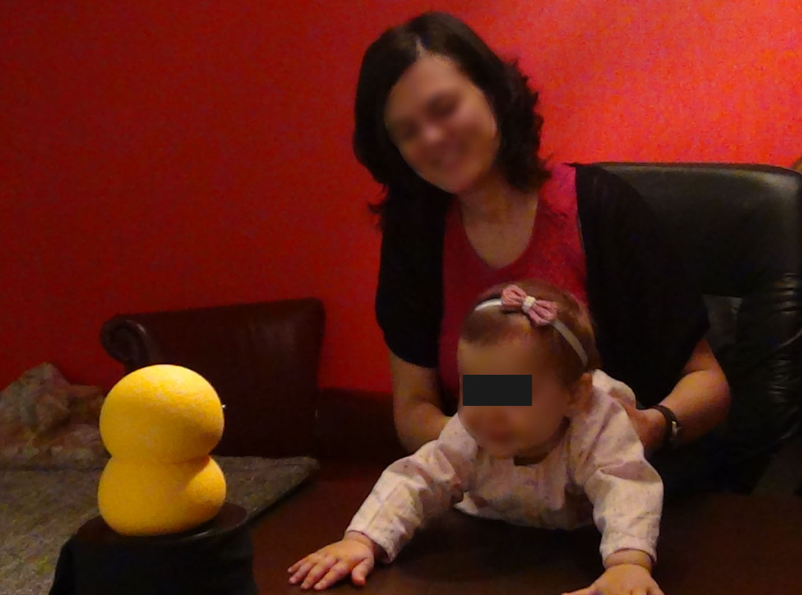
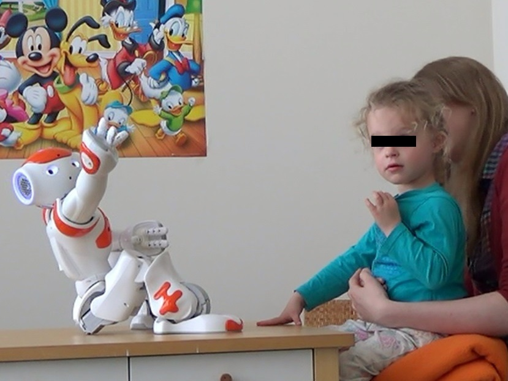

“When will you stop playing with toys?” — My mom
Using robots in autism therapy
Autism affects a person’s capacity for understanding other people and their feelings, and for establishing reciprocal relationships. Recent research suggests that children with autism exhibit certain positive social behaviors while interacting with robots that are not observed while interacting with their peers, caregivers, and therapists. The undisputed benefits of the presence of a robot in therapeutic intervention make robot-assisted diagnosis, research and treatment become more and more popular. However, many of the current approaches restrict to a Wizard of Oz (WOZ) in which the robot is usually remotely controlled. In the long-term, the robots need to increase their autonomy to lighten the burden on human therapists and to provide a consistent therapeutic experience. In my research, I have worked with Probo, NAO, and My Keepon.
Currently, I'm working in DREAM project which aims to deliver the next-generation of robot assisted autism therapy (RET). The robots are able to operate autonomously for limited periods under the supervision of a therapist. The DREAM robot will also function as a diagnostic tool by collecting clinical data during therapy. It will operate under strict ethical rules and the DREAM project will provide policy guidelines to govern ethically-compliant deployment of supervised autonomy RET.


